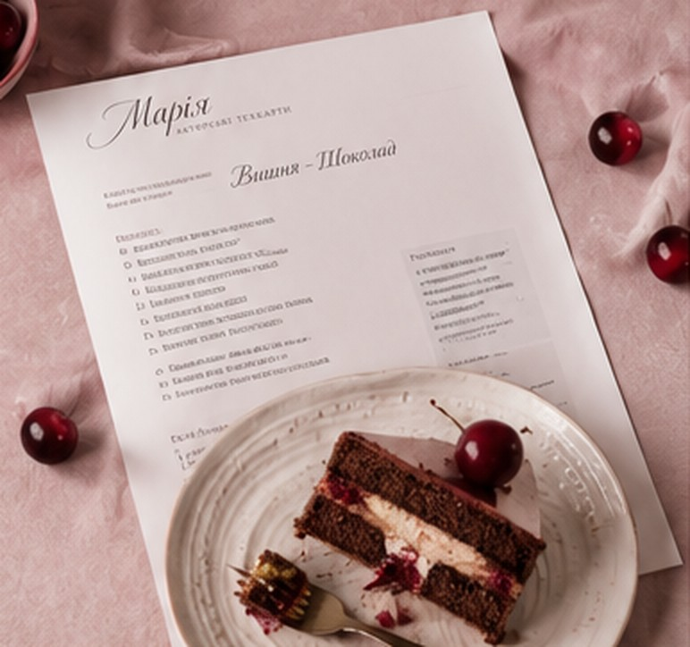

Вишня-шоколад
- Просочені шоколадні коржі
- Шоколадний чізкейк
- Вишневий соус
- Ванільно-вершковий кремчіз
[ціна]Обрати
Техкартки тортів на кожен смак: для першого замовлення, нового смаку в меню чи родинного свята.

Це цифрові рецепти у форматі PDF, а не замовлення готових тортів.

Що всередині техкартки
Макет PDF, точні пропорції та етапи приготування. Ви бачите весь шлях до готового торта ще до першого замісу.
Зрозумілі кроки й точні грами: менше помилок на першому замовленні.
Готовий перевірений смак для меню без довгих тестувань.
Один смак, збірка чи повний пакет


Один смак на вибір.
[ціна]Кілька техкарток в одному наборі.
[ціна]Усі наявні смаки; нові додаватимуться з часом.
[ціна]Далі в планах: техкартки на кекси, паски, цукерки та інші десерти з асортименту Марії.

Авторка та відгуки
Марія — кондитер із Дніпра, авторка marymar. Вона створювала торти на замовлення: весільні, святкові, подарункові. Коли підписники в Instagram почали просити навчити їх, з'явилася ідея передати досвід у техкартках: з точними грамами й тим самим підходом, що стоїть за її тортами.
...торт був дуже смачний, дякуємо ... Запитували ваші контакти, поділились) ... Хочемо замовити ще для себе такий самий, тільки вже менший
ми з чоловіком не встигли навіть скуштувати торт ... всім дуже сподобався, гості забрали все, нічого не залишилось через 5 хвилин після нарізання
Я дуже вдячна за торт - шедевр у Вашому виконанні ... Чоловік був в шоці!!! ... Він дійсно в захваті і я в захваті!
Відгуки покупців техкарток з'являться тут після перших продажів.
Безкоштовний калькулятор
Безкоштовний калькулятор як корисний інструмент для кондитерів.
Розрахунок для круглих форм з однаковою висотою шарів.
Обрати техкарткуВідповіді на запитання
Формат PDF, вміст техкартки, оплата та отримання файлу.